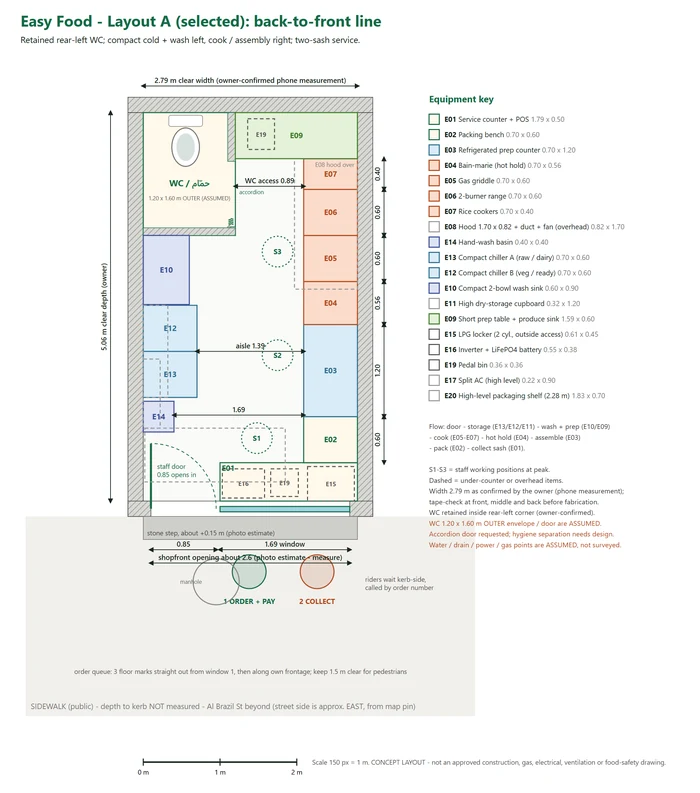
معاينةالتوزيع A: خط من الخلف إلى الأمام
تبريد وغسيل على اليسار، وطبخ وتجميع على اليمين، ونافذتان للطلب والاستلام. الممر الرئيسي 1.39 م.
إيزي فود · دمشق، شارع البرازيل
مطبخ طلبات خارجية للأكل الصحي في دمشق. استكشف تصوّر المحل، وتجوّل في المطبخ ثلاثي الأبعاد، وتصفّح الهوية البصرية؛ كل ملفات المشروع في مكان واحد.
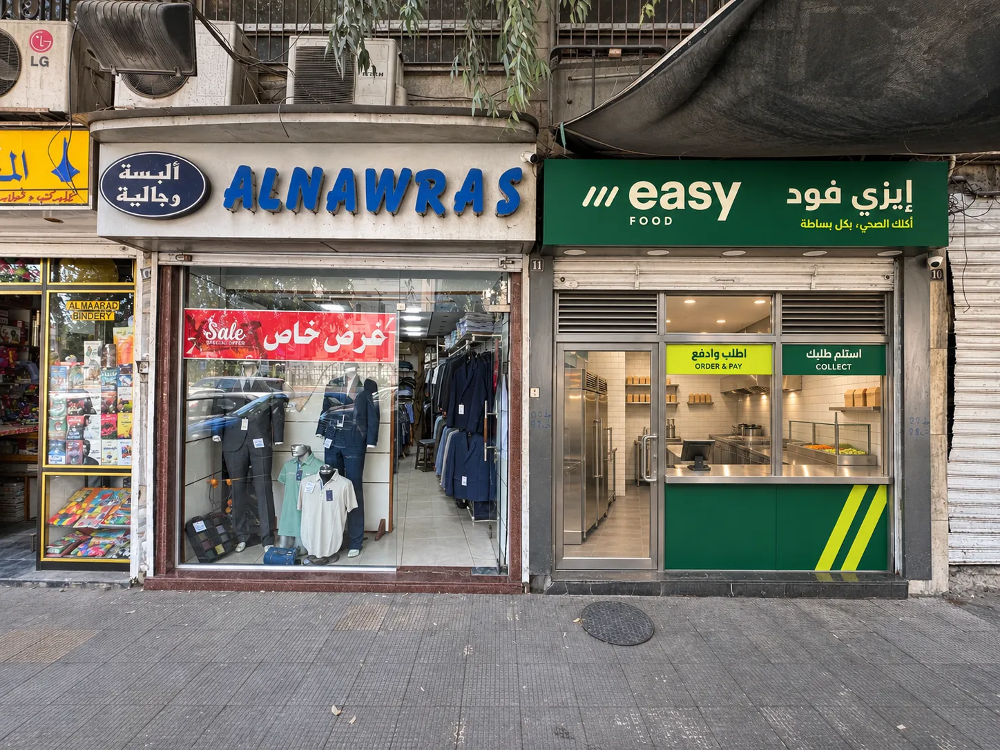
01 — The place
من نافذة الطلب على الرصيف حتى خط التحضير في الداخل: مشاهد تُظهر الضوء والمواد وإيقاع العمل كما يقترحها التصميم.
تصوّرات تصميمية مولّدة بالذكاء الاصطناعي من مشاهد النموذج؛ الواجهة محدّثة وفق صور الموقع الفعلي. ليست صوراً لمحل منفّذ.
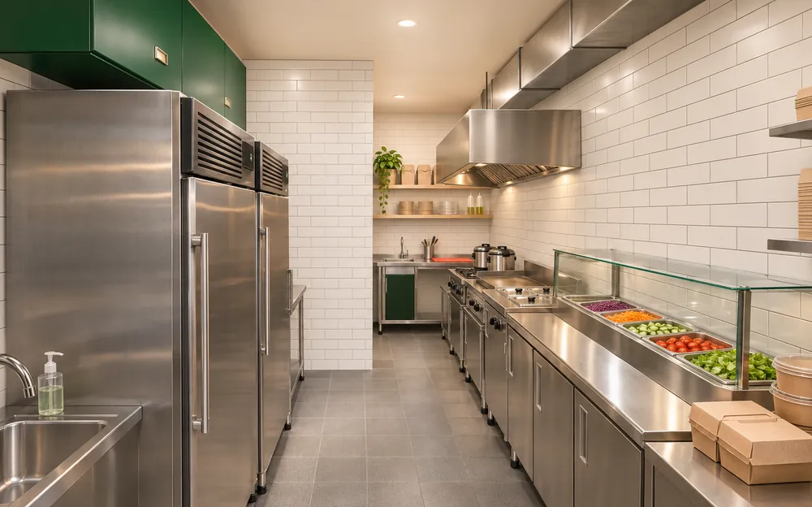
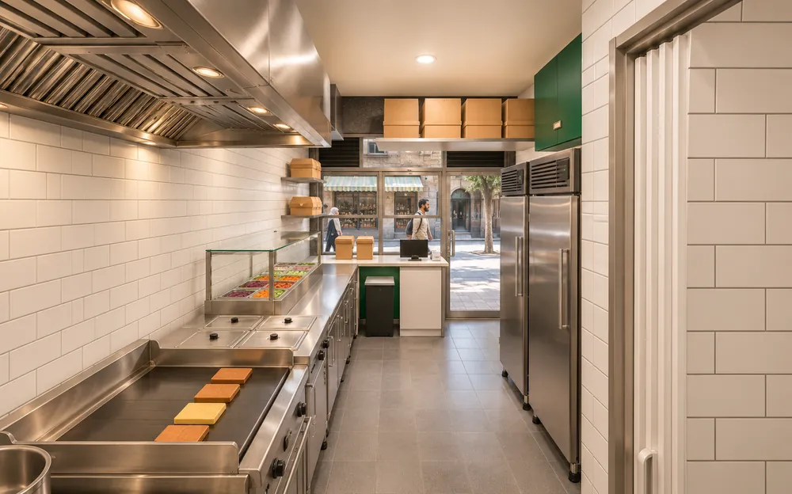
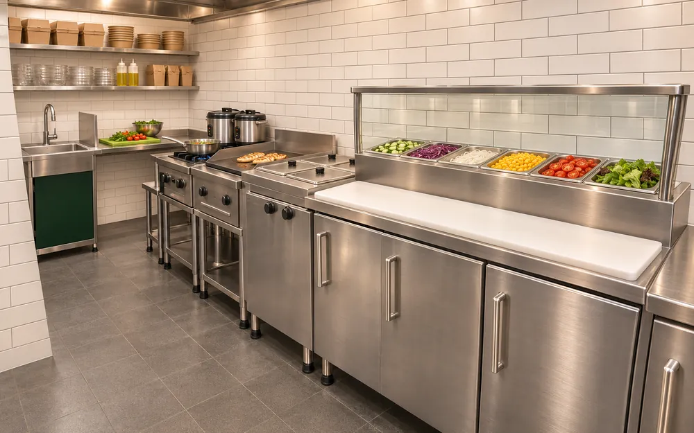
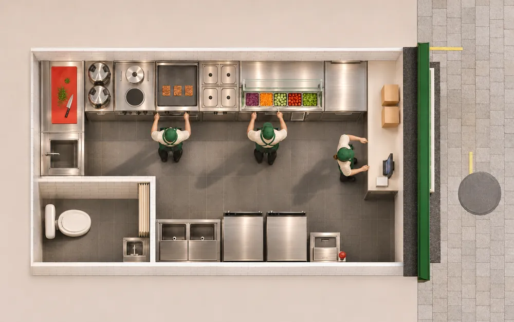
02 — Kitchen & layouts
توزيعتان على مساحة 2.79 × 5.06 م تحافظان على الحمّام الخلفي. ابدأ بالنموذج التفاعلي، ثم راجع المساقط كاملة كوثائق قابلة للتكبير.
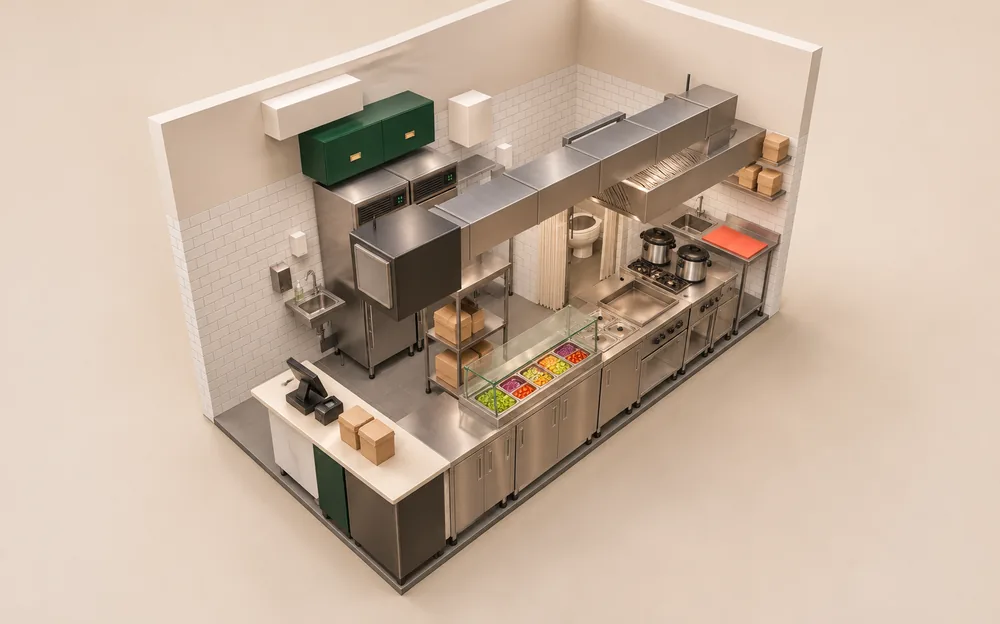
افتح النموذجInteractive 3D model
دوّر النموذج، وبدّل بين المناظير والطبقات، وانتقل بين التوزيعتين A و B، بتسميات عربية أو إنكليزية.
افتح أي ورقة لتراها كاملة، ثم كبّرها لقراءة المقاسات.

معاينةتبريد وغسيل على اليسار، وطبخ وتجميع على اليمين، ونافذتان للطلب والاستلام. الممر الرئيسي 1.39 م.
نفس الحمّام ومجموعة الغسيل والتبريد، والتجميع في الوسط، ونافذة تسليم واحدة.
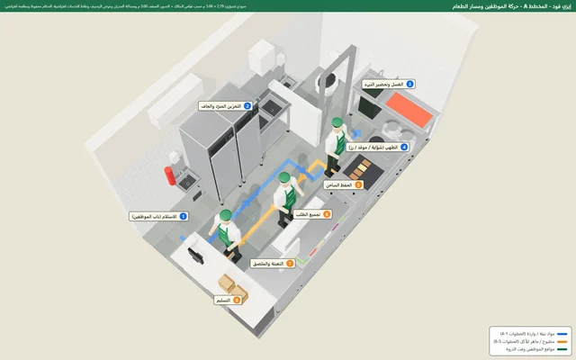
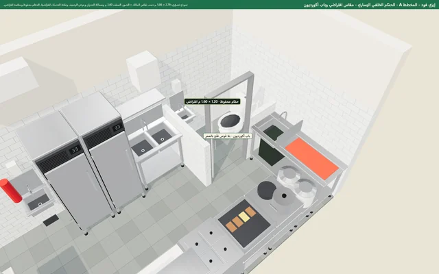
تصوّر أولي. المخططات والنموذج ليست مخططات تنفيذية. مقاسات المحل قياس هاتف من المالك؛ مقاس الحمّام والسقف ونقاط الخدمات افتراضية وتحتاج قياساً موقعياً قبل التنفيذ.
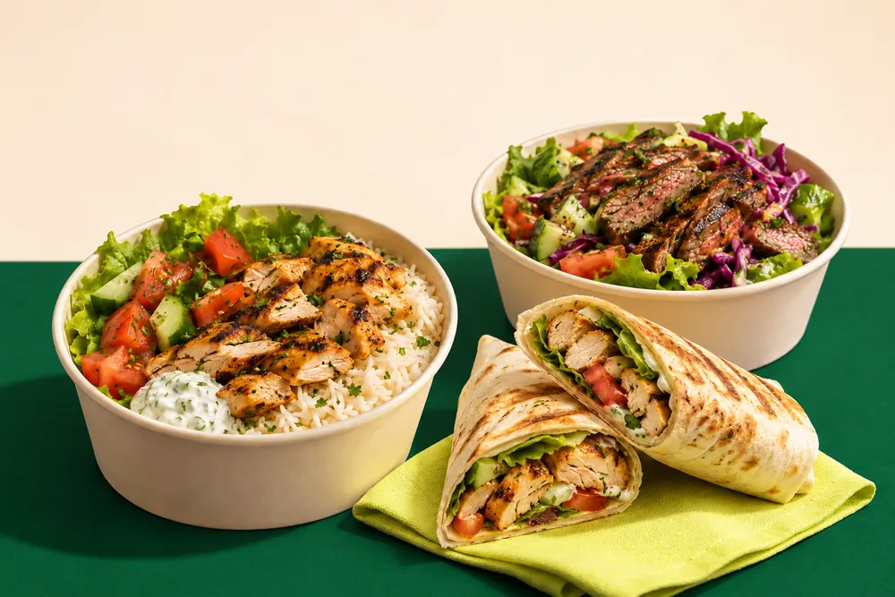
03 — Visual identity
الشعار بعلاماته المائلة الثلاث، أخضر الغابة واللمسة الليمونية، وخطّا Cairo و Manrope؛ مطبّقة على التغليف والواجهة والزي والسوشال.
Eat smart. Live easy.
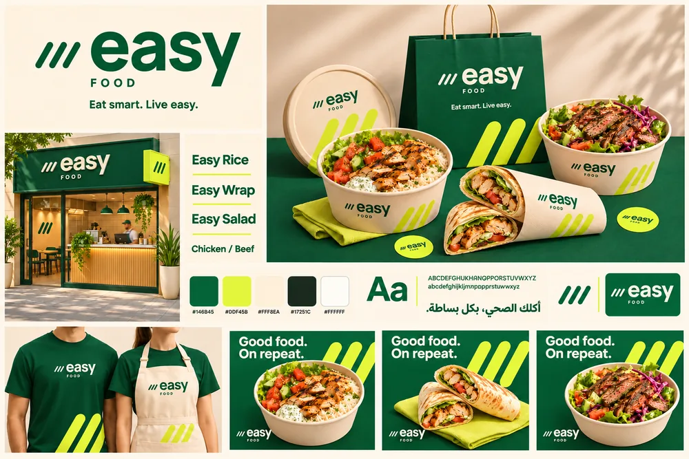
أكلك الصحيCairo · Arabic
Good food. On repeat.Manrope · Latin
تطبيقات الهوية وصور الطعام تصوّرات للعرض؛ تُراجع المقاسات ومواصفات الطباعة مع المورد قبل الإنتاج.
04 — Files & studies
كل ما يلزم لمراجعة المشروع أو مشاركته: النماذج والمخططات والهوية والدراسات المكتوبة، مرتّبة حسب الموضوع.